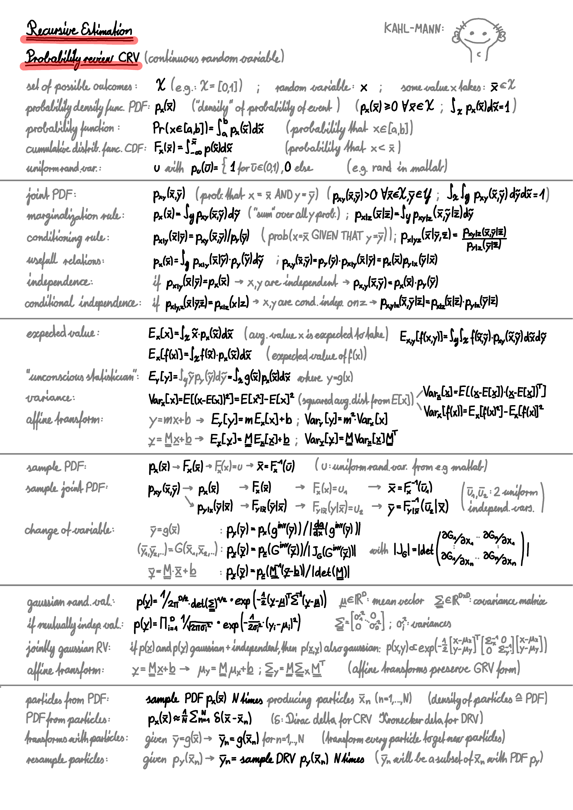

I credit the notes that I take as a big reason why my brain is not melting. They allow me to forget things, knowing that if I ever need to remember, I'll find everything back in a concise and very familiar structure. Their quality greatly improved over the years of study, and I believe this is largely because I was allowed to take increasingly fewer courses per semester, giving enough time to actually understand what I was learning. Below I've posted two sample pages, and below that the download links to all notes from my mechanical engineering study at ETH Zürich (about 300 pages). To this day, whenever I feel like I should remember something complicated, I write it down on my tablet and save it in my notes folder.
(Kalman is a big name in recursive estimation, and his name sounds like "Kahl Mann", which means bald man in German, thus the doodle)

| System Identification: | system_ident.pdf |
| Recursive Estimation: | recursive_estim.pdf |
| Dynamic Programming: | dynamic_prog.pdf |
| Model Predictive Control: | model_pred_ctrl.pdf |
| Robot Dynamics: | robot_dynamics.pdf |
| Orbital Dynamics: | orbital_dynamics.pdf |
| Linear Optimization: | linear_optimization.pdf |
| Comp. Mechanics I: | comp_mech_1.pdf |
| Comp. Mechanics II: | comp_mech_2.pdf |
| Computer Graphics: | comp_graphics.pdf |
| Computer Vision: | comp_vision.pdf |
| Control Systems I: | control_systems_1.pdf |
| Control Systems II: | control_systems_2.pdf |
| System Modelling: | system_modelling.pdf |
| Signals and Systems: | singnals_systems.pdf |
| Analysis I+II: | analysis_1.pdf |
| Analysis III: | analysis_3.pdf |
| Linear Algebra: | linear_algebra.pdf |
| Computational Methods: | comp_methods.pdf |
| Mechanics: | mechanics_2.pdf |
| Physics I+II: | physics.pdf |
| Fluiddynamics I: | fluiddynamics_1.pdf |
| Fluiddynamics II: | fluiddynamics_2.pdf |
| Thermodynamics I: | thermodynamics_1.pdf |
| Thermodynamics II: | thermodynamics_2.pdf |
| Thermodynamics III: | thermodynamics_3.pdf |
| Chemistry: | chemistry.pdf |
| Dimensioning: | dimensionieren.pdf |